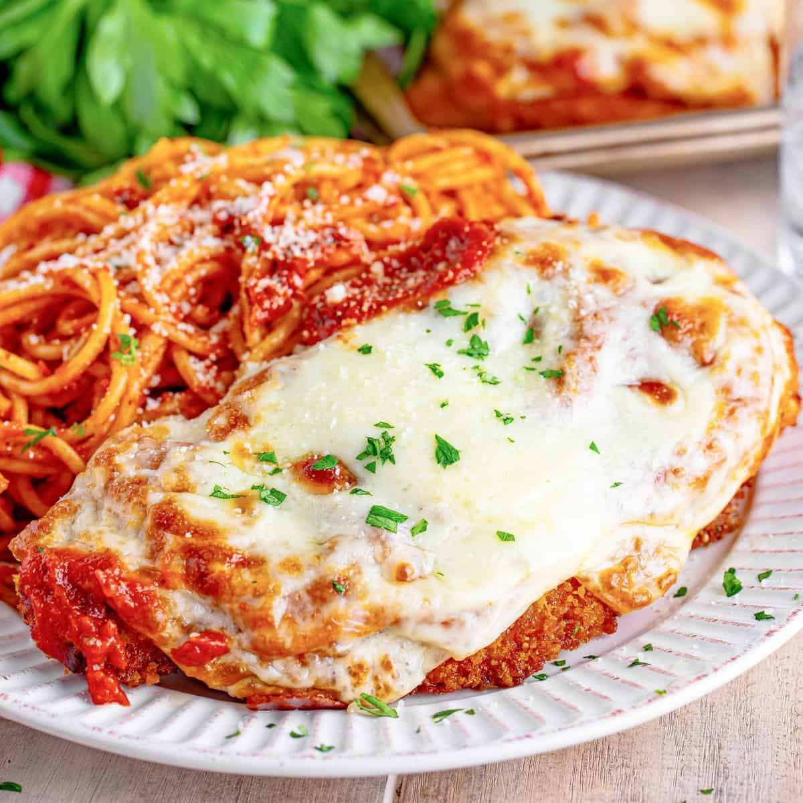

Chicken Parmesan

How to make delicious Chicken Parmesan
Chicken Parmesan is no doubt the most popular non-pasta dish in Italian-American style restaurants. And while this delicious meal may seem fancy, it's actually pretty easy to make at home.
Ingredients
- Chicken:4 chicken breasts.
- Eggs:2 large eggs.
- Bread Crumbs:1 cup store bought or homemade bread crumbs.
- Cheeses:3/4 cup grated cheese, 1/4 cup mozzarella, 1/2 grated provolone cheese.
- Tomato Product:1/2 cup tomato sauce.
- Spices:salt and black pepper.
- Flour:2 tablespoons all-purpose flour.
Steps
- Preheat oven to 450 degrees F.
- Pound chicken breasts to a thickness of 1/2 inch.
- Season chicken thoroughly.
- Beat eggs in a bowl.
- Mix bread crumbs and 1/2 cup parmesan cheese in separate bowl.
- Dip chicken breasts into egg batter and transfer to bread crumb mixture.
- Cook on skillet until chicken is golden.
- Transfer chicken to baking dish and top with tomato sauce, basil and cheeses.
- Bake for 15-20 minutes.